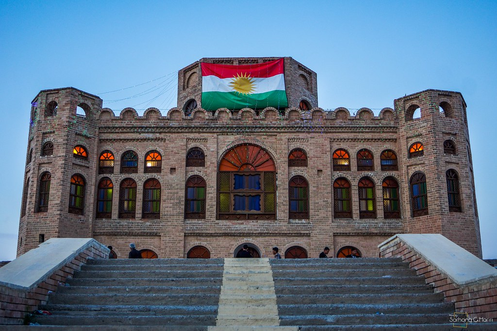
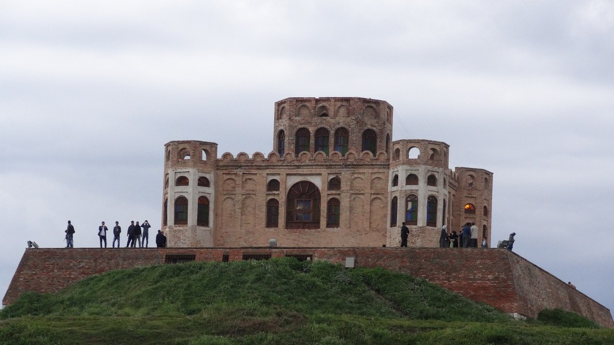

Sherwana Castle

It was built by Mohamed Pasha Jaff, Kurdish pasha serving the Ottoman Empire,[1] during the 1800s. After the Mamluk Vali of Baghdad, Suleiaman Pasha, dealt a crushing defeat to the Persian occupation of Abbas Mirza Qajar of Northern Mesopotamia, and put to flight the Babans in 1850, Mohamed Pasha Jaff along with the Jaff nomads were allowed to dwell in the Shahrizor unharassed by the Ottomans or Persians in any way. A golden age began for the Jaff as they became a major power in all the region.
Their nomadic caravans were allowed pasture from Khanaqin and Qizil Rubat to Panjwin in the Shahrizor region of Kurdistan. In these regions Mohammed Pasha Jaff from his position of power began to crack down on all of his enemies from the Pro Baban Jaff under Aziz Beg Jaff, who was the son of Kai Khasrow Beg Jaff to the rival tribe of the Hemevand, who were anti Ottoman and anti-everything. He would erect a fortress on the banks of the Shirwan river to guard against all of these foes in 1866.
This fortress is now known as the Shirwana fortress. In 1868, he would be appointed by the Mamluk Vali Suliaman Pasha of Baghdad. The Jaff's rivals, Hamavands, would go to the Caucasus and fight under for the Russians against the Ottomans. The Russians would arm them and send them back to agitate the Shahrizor and create anarchy.

Osman Pasha Jaff's son, would be given the residence of the fortress, as his father concerned himself with the affairs of Gulanbar and Halabja, Mohammed Ali Beg Jaff. During World War I the Jaff and the Kurds would fall into obscurity as most of the war took place in the South between the Ottomans and British, fighting a back forth battle around Kut, which the Ottomans would deal the British their worst defeat during the war. The British would finally get the upper hand through other fronts, the Palestine front especially. The Ottomans would sign the Treaty of Mudros in 1917. The British would then occupy Mesopotamia, and the Ottoman Empire would cease to exist. During the British Occupation much of the Kurdish population would revolt under Sheikh Mustafa Barzani, whose power base was in Suliamania in 1918, 1922-1924, including segments of the Jaff tribe. The British would end up destroying many Palaces and Fortresses built by the Kurds. Sherwana Castle was the exception, since the Brits had good relations with the Jaff.
The castle was damaged due to military activity in the 1990s. Further damage occurred as the result of heavy rain in 2014 which affected the walls, causing them to crack. In 2017 an earthquake damaged 35% of the structure, including the cupola which partially collapsed. Restoration took place in 2018